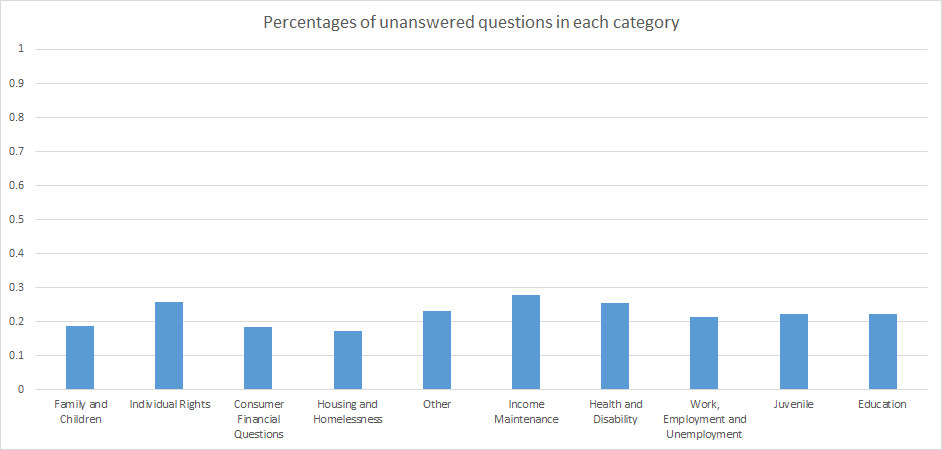
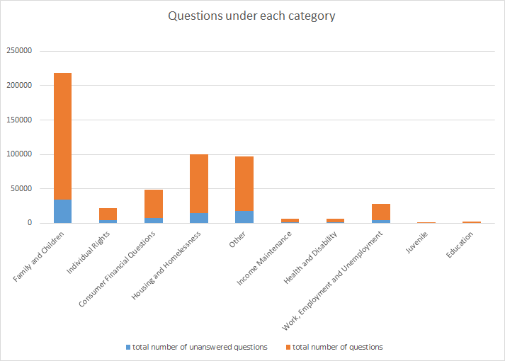
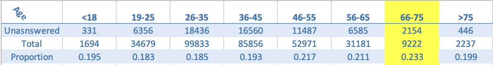
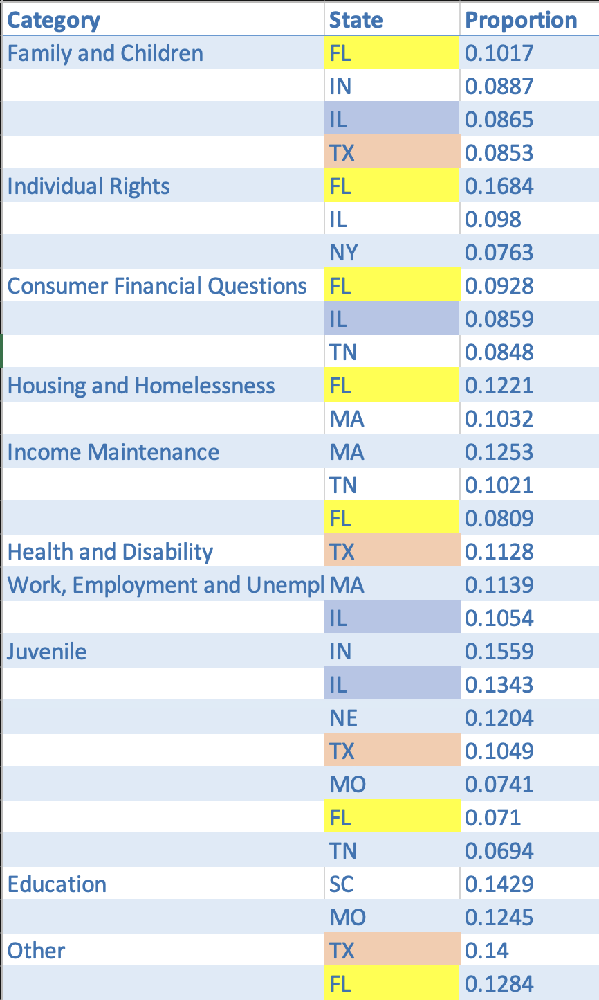

This study investigates the potential variables that affect unanswered questions in a dataset, with particular emphasis on four key variables: 1) overall categories, 2) categories by state, 3) income of clients with unanswered questions, 4) age of clients with unanswered questions, and 5) ethnicity of clients with unanswered questions. The objective of this research is to identify potential patterns or associations between these variables and the incidence of unanswered questions. The results of this study may provide insights into factors that contribute to incomplete data in the dataset, and inform strategies for addressing these issues in future data collection efforts.
One important metric for evaluating the effectiveness of the ABA's services is the number of unanswered questions submitted by its members. Unanswered questions can indicate a lack of clarity or guidance on certain legal issues. As such, it is crucial to identify the main variables that affect the number of unanswered questions.
Before the analysis, we first reframed our database by merging relevant data and removing data irrelevant to our research. For example, we combined the questions and question_posts with the respective categories and subcategories with the subcategory identifier.
For topic 1, we collected data from question posts and sorted them by their categories. We then calculated the proportion of unanswered questions in each category to find if there exists a statistically difference among each category. For topic 2, we assessed the proportion of unanswered questions in each state for each category and examined any states that were outliers. For topic 3, 4, and 5, we extracted the IDs of the unanswered clients from the question post file and matched them with information from the client file. Using information on unanswered posters, we determined their income range, age, and ethnicity to identify any trends in these areas.


Despite significant numerical variance in the categories of posts with “Family and Children” taking the largest proportion with more 200,000 cases, the ratio of unanswered posts to total posts was found to be largely consistent. However, our team identified outlier states with extremely low ratios among all states in 9 out of 10 categories, with the Juvenile category having 7 outlier states. For income, we found out that groups with income less than 0 tend to have more unanswered questions with the suspicion of limited samples. Classes with higher income tend to have slightly less cases. For age, groups between 66 and 75 tend to have more unsolved cases. For race, African and Asian have more unanswered questions, and Caucasian,Slavic, and East Indian have less unanswered questions.


TRAIN AND HIRE MORE ATTORNEYS WITH CHILDREN AND FAMILY CATEGORY GOVERNMENT SHOULD PAY MORE ATTENTION TO STATES LIKE FL, TX, IL AGE BETWEEN 66-75 SHOULD RECEIVE MORE ATTENTION ALLOCATE MORE ATTORNEYS FOR SPECIFIC RACE (AFRICAN AND ASIAN)